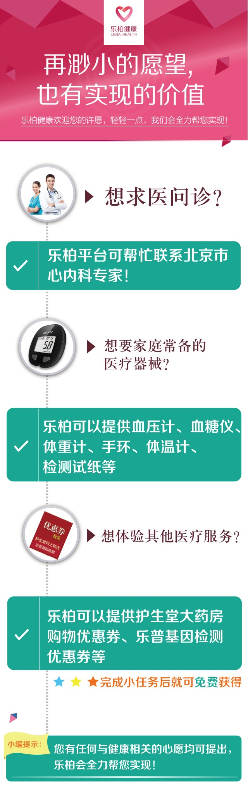

<style media="screen">
  .xinyuan {
    font-family: "微软雅黑";
    color: #6C6D6E;
    font-weight: bold;
    font-size: 16px;
  }

  .xinyuan .shixian {
    text-align: center;
    margin: -20px auto;
    padding: 5px;
    border-radius: 10px;
    width: 180px;
    background-color: #E5E6E7;
    border: 1px solid #C6C7C8
  }

  .xinyuan .block {
    overflow: hidden;
    ;
    border-bottom: 1px solid #E6E7E8
  }

  .xinyuan .top {
    margin-top: 30px;
  }

  .xinyuan .touxiang {
    float: left;
    margin-top: 10px;
    margin-left: 30px
  }

  .xinyuan .miaoshu {
    float: left;
    margin-top: 10px;
    margin-left: 20px;
    width: 65%
  }
</style>
<ion-view view-title="发表心愿-乐柏健康" cache-view="false">
  <ion-content class="xinyuan" cache-view="false">
    <div >
      
      <!-- <div class="" style="position:relative">

          <a class=" icon  ion-chevron-left" style="z-index:10;position:absolute;top:20px;left:5%;color:#000" href="javascript:history.go(-1)" ></a>

        
      </div>
      <div class="" style="z-index:-1;position:relative;height:50px;border-bottom:1px solid #E6E7E8">

      </div>
      <div class="shixian" style="">
        实现心愿
      </div>
      <div class="block top" style="">
        <div class="touxiang" style="">
          
        </div>
        <div class="miaoshu" style="">
          <p>
            李阿姨：
          </p>
          <p>
            68岁，患有慢性心衰，想预约北京阜外医院心衰病房。2016年2月15日许下心愿，2月25日达成心愿
          </p>
        </div>
      </div>
      <div class="block" style="">
        <div class="touxiang" style="margin-left:36px;margin-right:11px">
          
        </div>
        <div class="miaoshu" style="">
          <p>
            张先生：
          </p>
          <p>
            49岁，怀疑有冠心病，想去北京安贞医院进一步检查。2016年1月12日许下心愿，1月20日达成心愿
          </p>
        </div>
      </div>
      <div class="block" style="">
        <div class="touxiang" style="">
          
        </div>
        <div class="miaoshu" style="">
          <p>
            王大爷：
          </p>
          <p>
            60岁，血压偏高，想要一台好用的血压计。2016年1月2日许下心愿，1月10日达成心愿
          </p>
        </div>
      </div> -->
      <div class="" style="padding:10px 10px">
        <button ng-click="fabu()" style="background-color:#2CCD8F;" class="button button-block button-positive">
          发布心愿
        </button>
      </div>
    </div>


  </ion-content>
</ion-view>
